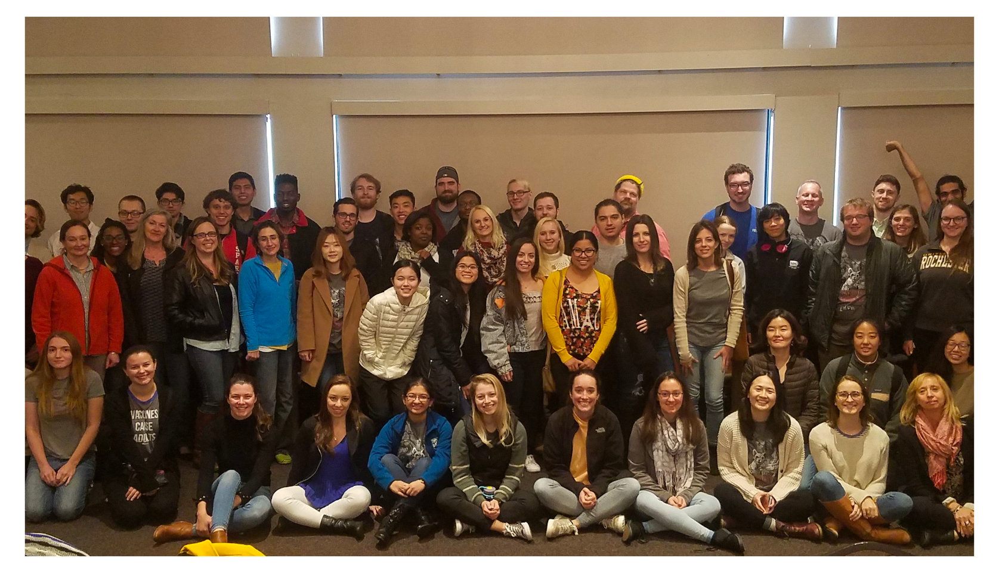

I’m a PhD candidate in the Cell, Molecular, Developmental Biology, and Biophysics (CMDB) program at Johns Hopkins University, in the lab of Rajiv McCoy.
My PhD research focuses on the evolutionary impacts of genetic variation within complex regions of the genome. These regions, which are typically repetitive and/or structurally rearranged, are difficult to study with traditional genomics approaches — but new sequencing and computational methods have given us the tools to start uncovering their biological functions.
Research Projects

Local adaptation at human structural variant loci
Large genomic rearrangements (insertions, deletions, etc.), called structural variants (SVs), are an understudied form of genetic variation that can have dramatic functional impacts. These variants are hard to discover with normal sequencing methods, and instead require expensive and low-throughput long-read sequencing to study comprehensively. We used a hybrid approach to study SVs on a population-wide scale: SV discovery with long-read sequencing + computational genotyping in a large dataset of diverse human individuals. We found evidence of SVs under positive selection in specific populations, including a sequence in the immunoglobulin locus that was inherited into humans from Neanderthals.

Characterizing a complete human reference genome
When the human genome was first sequenced in 2001, 8% of its most complex and repetitive regions were inaccessible to current sequencing technologies, and consequently remained incomplete for the next two decades. In 2021, the Telomere-to-Telomere Consortium used long-read sequencing to assemble the first ever complete human reference genome, T2T-CHM13. Within this collaborative project, I characterized the ancestry of this new reference genome and identified portions that were inherited from Neanderthals. I also studied regions of the human genome that were revealed for the first time by the T2T-CHM13 assembly, to understand how variants in these regions may affect human health.

Review: Studying archaic hominin gene expression [PDF here]
Recent research on Neanderthals and Denisovans, the closest evolutionary relatives to modern humans, has begun exploring patterns of gene expression to better understand how these archaic hominins may have been different from modern humans. Studying gene expression means working on RNA, which is too fragile to survive the tens of thousands of years that separate us from archaic hominins. As a result, researchers have developed many creative approaches for inferring archaic gene expression from DNA sequencing data. We summarized these methods in this review.
Academic Service

A support and mentorship organization for biology graduate students (that I co-founded in 2020!).

Advocating for the CMDB student body and my graduate cohort as an elected representative.

I've been a moderator for sessions at two conferences — ASHG 2021 and the 2019 CMDB retreat.
Teaching

Introducing new biology PhD students to computational biology as a teaching assistant for the CMDB program's Quantitative Biology Bootcamp.

Co-developing (with Kate Weaver) open-source R modules for introducing undergraduates to human genetics research.
Personal Projects

From May 2020 to May 2021, I recreated all 26 varieties of curry from Pokémon Sword and Shield's Curry Dex. Then I ranked them on a tier list. (#5 Will SHOCK You)

Structural variant LD browser
An R Shiny app for browsing LD between human structural variants and SNPs, using data from my SV genotyping paper. (There's a lot of data, so it might take a minute to load!)